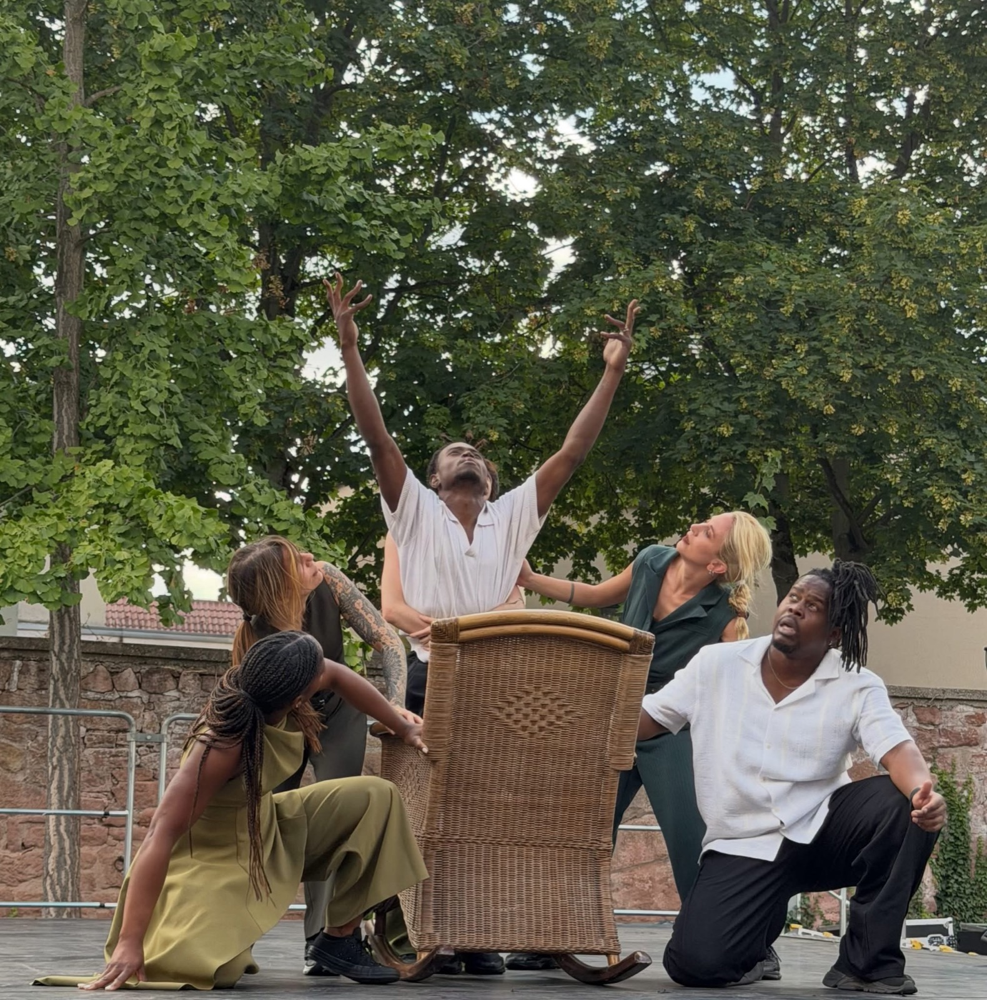
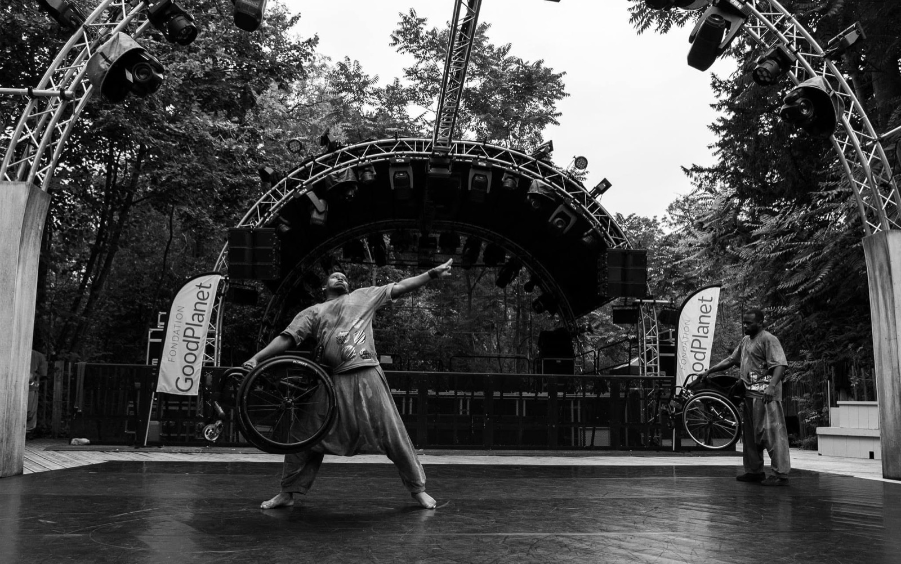
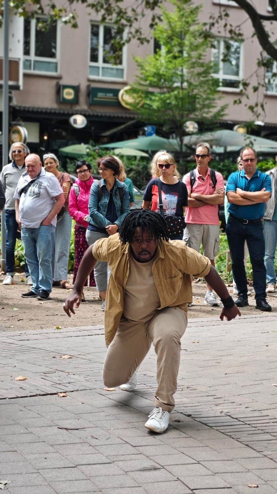
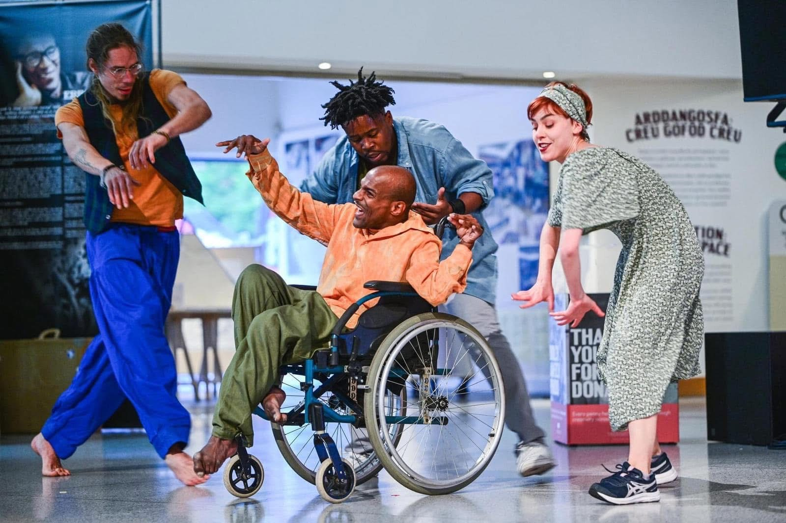
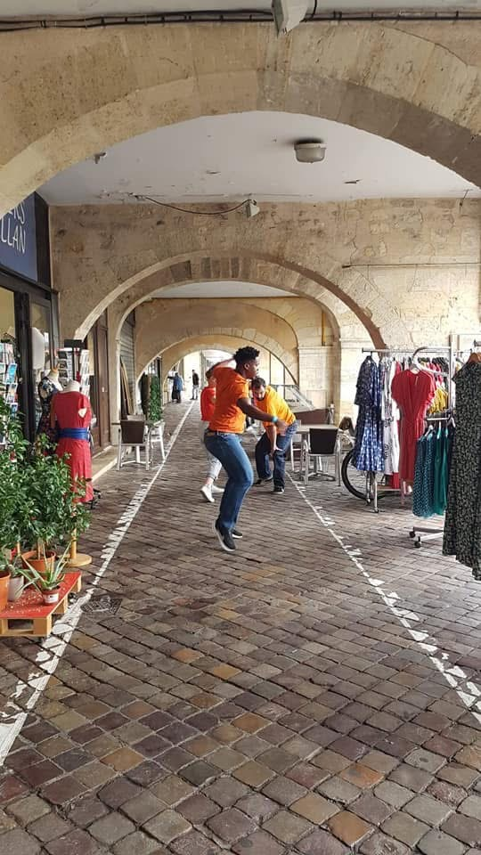
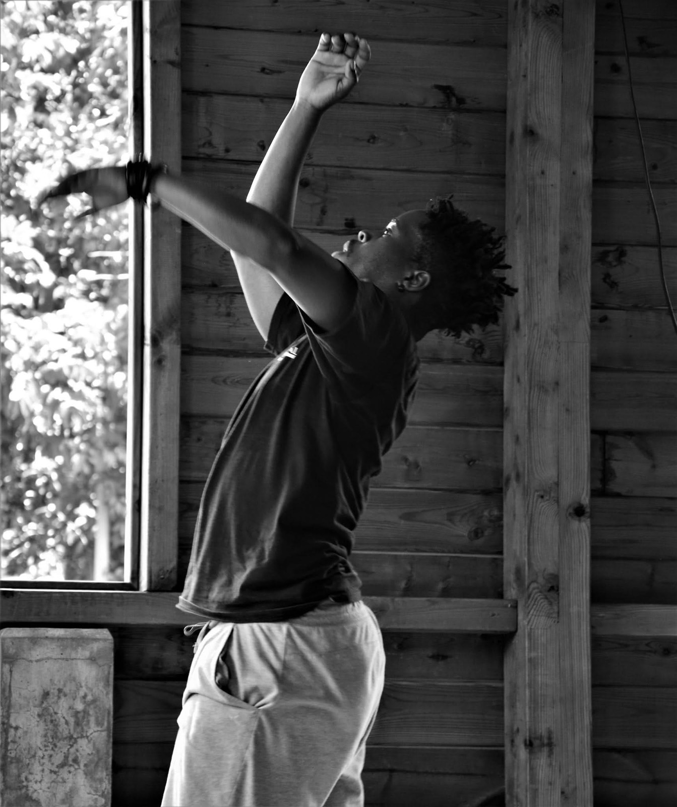
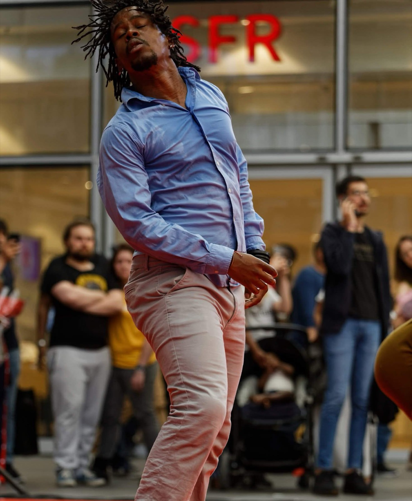
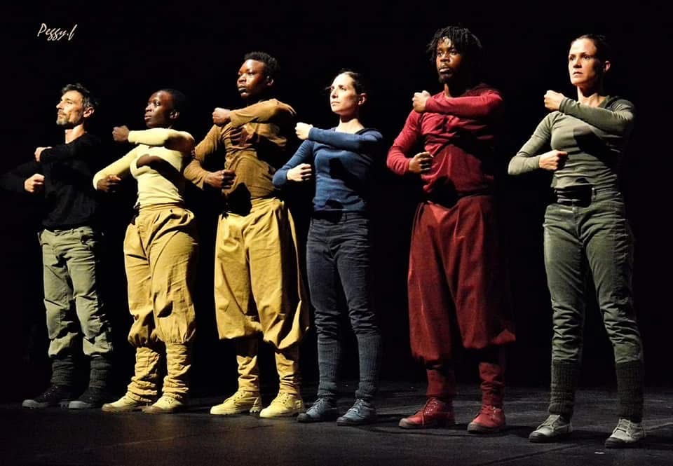

Life sometimes leads us down a steep or remote path. Are we ready to trust it, to accept where it places us? Isn't there always a reason for that?
Through a sensitive and committed choreographic language, Régis Tsoumbou Bakana and his partner Lucie Retail open a dialogue, searching for nuance in answering these questions with the urgency of words that feel essential and necessary.
“De là où je suis” invites everyone to take a fresh look at their own journey and at those of others. This deeply human piece reminds us that resilience is not about erasing wounds, but about learning to live and grow with them.
Production: Compagnie DK-BEL Co-production: Le Figuier Blanc — Argenteuil
See the supporters
Le Figuier Blanc — Argenteuil
Théâtre de la Vallée — Écouen
Ville de Capestang (34)
Ville de Vay (44)
Ville de La Grigonnais (44)
Préfecture du Val-d'Oise
Dispositif « Culture et Quartiers »
Conseil départemental du Val-d'Oise
Dispositif « Art et Culture en partage »
Chez moi
Year: 2026–2027 Choreography: Régis Tsoumbou Bakana Outside eye: Sophie Bulbulyan Performers: Jehyna Sahyeir Celestin, Régis Tsoumbou Bakana, Eric Nebie, Mathias Raumel Suitable from: age 10 Duration: 40 minutes
“Chez moi” by Régis Tsoumbou Bakana explores the notion of identity through the experience of immigration. Where am I truly at home? What place does my “home” from before hold in the one that comes after, without forgetting my inner “home”?
Dance becomes the language of a memory in motion, where cultural heritages, plural identities and individual experiences intertwine.
Without offering a definitive answer, the four artists — dancers and actors — invite everyone to reflect on what truly makes a “home”: a place, people, a language, memories, or the feeling of belonging to oneself.
Both intimate and universal, “Chez moi” celebrates the richness of life journeys and reminds us that identity is an ever-evolving construction, shaped by the places we leave, the ones we live in, and the encounters that transform us.
Production: Compagnie DK-BEL Special mention: Ville de Capestang (34), Centre culturel Simone Veil
Performer
Performing career
À force 2
2026

Compagnie DK-BEL — Director: Sophie Bulbulyan — Performer
See the venues
Capestang
Le Cube — Garges
Théâtre du Figuier Blanc — Argenteuil
Les Visages du Monde — Cergy
Prieuré de La Brigue (06)
Forum Jorge François — Nice
Espace Marcel Pagnol — Villiers-le-Bel
Théâtre du 13e Art — Paris
C'est beau
2023–2025

Compagnies DK-BEL & 6e Sens — Performer
See the venues
Capestang
Athens — Greece
Pôle Pik — Lyon
Cabasse
Bad Aussee — Austria
Ballets de Monte-Carlo — Monaco
La Farlède
Maison Victor Hugo — Paris
La Vieille Charité — Marseille
Théâtre de l'Antares — Vauréal
Arts Explora — Marseille
Hijinx Unity Festival — Cardiff
Visages du Monde / Culturebox
Château de La Roche-Guyon — passage of the Paralympic flame
Festival Imago — Fondation GoodPlanet
Théâtre Le Figuier Blanc — Argenteuil
Théâtre de Nemours
Espace culturel Laure Ecard — Nice
Feu d'Hiver Street Arts Festival — Nanterre
Salzkammergut — Austria
Kultur vom Rande Festival — Reutlingen
In peace
2023

Compagnie DK-BEL — Performer
Ludwigshafen Street Festival — Germany · La Vieille Charité — Marseille
Centre Chorégraphique National de Roubaix · L'Archipel — Scène nationale de Guadeloupe · Lalanbik — Réunion Island
Le joueur de Pih-Poh
2022

Compagnie DK-BEL — Performer
Hijinx Festival — Millennium Theatre — Cardiff, Wales · Alles Muss Raus — Theater Festival — Kaiserslautern, Germany · Espace Marcel Pagnol — Villiers-le-Bel
Impromptus chorégraphiques
2021

Compagnie Les Ouvreurs des Possibles — Choreographers: Delphine Bachacou & Jean-Philippe Coste — Performer
Fest'arts de Libourne
Cette terre me murmure à l'oreille
2021

Compagnie Christiane Emmanuel — Performer
Tropiques Atrium — Scène nationale de Martinique
Fragment
2020
Compagnie Point Zéro — Choreographer: Delphine Caron — Performer
Le Phare — Centre Chorégraphique du Havre
Messe pour le temps présent
2019

Compagnie Point Zéro — Choreographer: Delphine Caron — Performer
MPAA La Place · MPAA Odéon
Cercle égal demi-cercle au carré
2018–2023

Compagnie Difé Kako — Choreographer: Chantal Loïal — Performer
See the venues
2022–2023
Le Temps d'Aimer la Danse — Biarritz
L'Encre — French Guiana
Les Salins — Martigues
2020–2021
Le Mois Kréyol — Rocher de Palmer — Bordeaux
L'Embarcadère — Montceau-les-Mines
L'Iliade — Strasbourg
2018–2020
Maison des Arts de Créteil
Théâtre 13 / Seine
MPAA Odéon
Conservatoire du 13e — Barbara
Théâtres de Châtillon / Fontenay-aux-Roses
Opéra de Limoges
Festival Les Francophonies des écritures de la scène
Festival Suresnes Cités Danse — Théâtre Jean Vilar
FGO
Théâtre de la Licorne — Cannes
Théâtre Roger Ferdinand — Saint-Lô
Espace culturel Boris Vian — Les Ulis
Tropiques Atrium — Martinique
Théâtre du Moule — Guadeloupe
L'Archipel — Scène nationale de Guadeloupe
Festival Touka Danses — French Guiana
Carthage Dance Festival — Tunisia
À armes égales, noir de boue et d'obus
2018–2019
Compagnie Difé Kako — Choreographer: Chantal Loïal — Performer
Maison des Arts de Créteil · Conservatoire du 13e · Théâtre de Savigny-le-Temple
Festival International de Danse de Ouagadougou — Maison du Peuple — Burkina Faso · Festival Danse Afrique Dense — Centre de Développement Chorégraphique La Termitière — Burkina Faso · Saint-Pierre-des-Cuisines — Toulouse